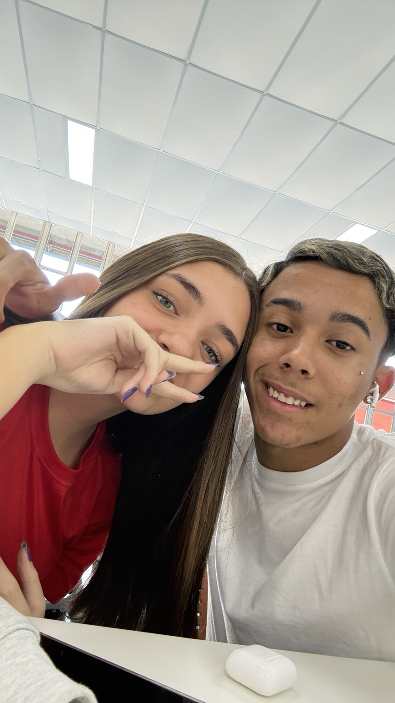
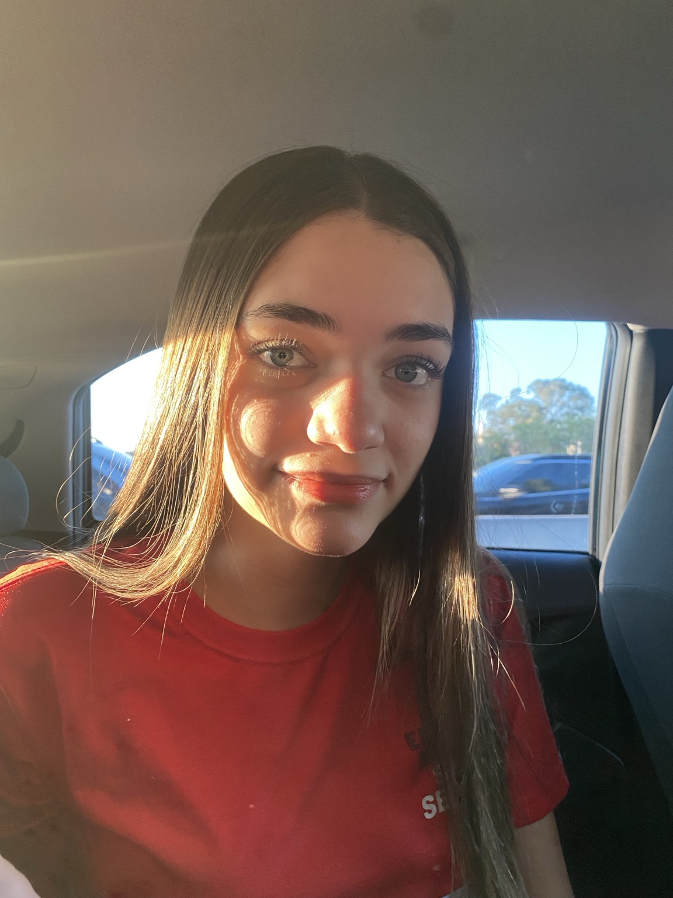

Seu jeitinho
Leve, divertido e cheio de personalidade.
Preparei um cantinho mágico só para você, com algumas das nossas memórias e um pouquinho de carinho em forma de código.
Entre estrelas, luas e pequenas aventuras, este site guarda algumas coisas que me fazem lembrar de você. Principalmente esse seu jeitinho fofo e essa parte criança que deixa tudo mais divertido. 💜
Leve, divertido e cheio de personalidade.
Momentos simples que acabam virando lembranças especiais.
Compartilhamos um lugar importante e muitas histórias.
Duas fotos nossas, porque não dava para fazer essa parte sem colocar você aqui.


Que cada novo ano traga mais aventuras, descobertas, risadas e momentos que façam você continuar sendo essa pessoa única.
Eu não sou muito bom com frases bonitas, então resolvi fazer isso do meu jeito: com um pouco de criatividade, código e várias lembranças.
Espero que você olhe para esse pequeno mundo e perceba o carinho que coloquei em cada detalhe. Você tem um jeito muito seu de deixar os momentos mais leves e divertidos.
E tem uma coisa que eu acho muito especial: esse seu lado criança, que aparece nas coisas que você gosta, nas brincadeiras e no seu jeito de se encantar com pequenas coisas. Nunca perca isso. ✨
Que a nossa caminhada continue cheia de respeito, amizade, companheirismo e boas aventuras.
Mas a história continua...
Feito especialmente para a Giulia 💜